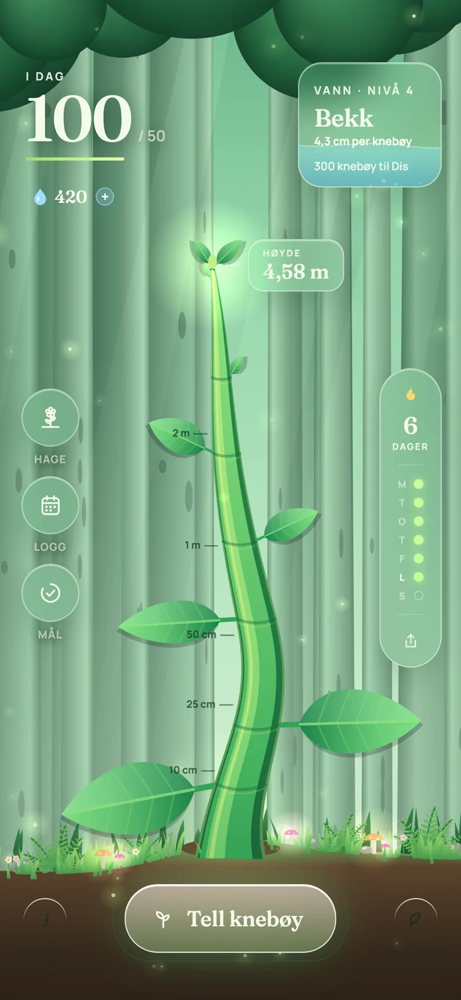

Tell knebøy.
Dyrk en hage.
Sprout er en app der hver knebøy får en plante til å vokse, og hver dag du trener blir stående igjen som en plante i en hage.
- iPhone først
- Android følger
- Under arbeid

Fire ideer bærer appen.
En knebøy er en dråpe vann
Telefonen står mot veggen og teller knebøyene med kameraet. De fem første vanner dagens frø. Etter det vokser stilken for hver knebøy.
En dag blir en plante
Når dagen er over, blir planten stående i hagen. Etter noen uker viser hagen hvor ofte du har trent, og den kan stelles, pottes og pyntes.
Vannet blir bedre
Jo flere knebøy du har tatt i alt, desto bedre vann får du: regn først, så brønn, kilde og bekk. Med bedre vann vokser stilken lenger for hver knebøy, fra skogbunnen og opp mot stjernene.
Hager kan besøkes
Venner besøker hagene til hverandre og legger igjen en sommerfugl med noen ord. Den som eier hagen, finner den neste gang hagen åpnes.
- Gratis
Ingen abonnement og ingen reklame. Det eneste som selges er dugg, som brukes til frø og pynt, og som også tjenes ved å ta knebøy.
- Kameraet teller på telefonen
Ingenting filmes, lagres eller sendes.
- Vises, ikke forklares
Appen forklarer seg med små animerte scener, ikke med tekst.
- Åtte språk
Norsk, engelsk, tysk, fransk, spansk, portugisisk, japansk og koreansk.
iPhone-versjonen er bygget og testes. Android er under arbeid.